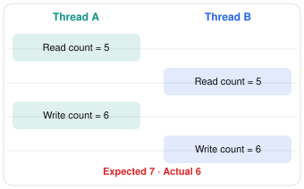
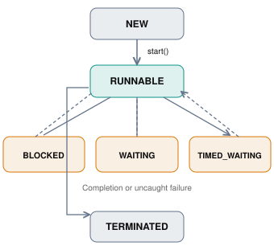
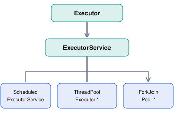

Locking API
The Locking API provides more flexible programmatic concurrency control mechanisms than the synchronized keyword.
- Allows actions to be performed on an object without interference from other threads.
- Available from the
java.util.concurrent.locks package (since Java 5).
- A write lock prevents other threads from concurrently reading or modifying the object.
- A read lock can be acquired by multiple threads at the same time if the write lock is not held by another thread, allowing concurrent read actions.
With synchronized, the JVM acquires and releases a monitor automatically around a block. With the Locking API, the program calls lock() and unlock() itself. That costs a little discipline, since every lock() must be paired with an unlock() in a finally block, but in return the program can try for a lock without blocking, give up after a timeout, be interrupted while waiting, choose fair ordering, keep several wait conditions, and let readers share access.
synchronized vs Lock
| Feature | synchronized | Lock API |
|---|
| Acquire and Release | Automatic, at block entry and exit | Explicit lock() and unlock() in finally |
| Try Without Waiting | Not possible | tryLock() |
| Timeout | Not possible | tryLock(time, unit) |
| Interruptible Wait | No | lockInterruptibly() |
| Fairness | No ordering guarantee | Optional fair mode |
| Reentrant | Yes | Yes for ReentrantLock and ReentrantReadWriteLock; no for StampedLock |
| Shared Reads | No, always exclusive | ReentrantReadWriteLock, StampedLock |
| Wait Conditions | One per monitor (wait/notify) | Many per lock (Condition) |
| Span | One block or method | Can be locked in one method and unlocked in another |
Pros and Cons
- More Control
Try-locking, timeouts, and interruptible waits let a thread back off instead of blocking forever.
- Higher Read Throughput
Read-write and stamped locks let many readers work in parallel when writes are rare.
- Fairness
A fair lock prevents threads from being starved by newcomers that keep grabbing the lock first.
- Multiple Conditions
Separate conditions wake only the threads that care, instead of notifyAll() waking everyone.
- Easy to Misuse
Forgetting unlock(), or calling it outside finally, leaves the lock held forever after an exception.
- More Verbose
Every critical section needs the lock, try, finally, unlock pattern instead of one keyword.
- Overhead for Simple Cases
For short, uncontended sections synchronized is just as fast and simpler to read.
- Fairness Costs Throughput
Fair locks hand the lock over in strict order, which is noticeably slower than the default mode.
Best Practices
- Always call
lock() just before try, and unlock() in the matching finally.
- Keep the locked section short; never do slow I/O or call unknown code while holding a lock.
- Acquire multiple locks in the same global order everywhere, or use
tryLock with a timeout, to avoid deadlocks.
- Prefer
synchronized for simple mutual exclusion; reach for the Locking API when you need one of its extra features.
- Use read-write locks only when reads clearly dominate; with frequent writes they can be slower than a plain lock.
- Always wait on a
Condition inside a while loop, because wake-ups can be spurious.
public class PriceList {
private List<Product> menu = new ArrayList<>();
private ReentrantReadWriteLock rwl = new ReentrantReadWriteLock();
private Lock rl = rwl.readLock();
private Lock wl = rwl.writeLock();
public Product get(int id) {
rl.lock();
try { return menu.stream().filter(p -> p.getId() == id).findFirst().orElse(null); }
finally { rl.unlock(); }
}
public void add(Product product) {
wl.lock();
try { menu.add(product); } finally { wl.unlock(); }
}
}
public class Account {
private ReentrantLock lock = new ReentrantLock(true);
private long balance;
public boolean withdraw(long amount) throws InterruptedException {
if (!lock.tryLock(500, TimeUnit.MILLISECONDS)) return false;
try {
if (balance < amount) return false;
balance -= amount;
return true;
} finally { lock.unlock(); }
}
}
public class BoundedBuffer<T> {
private Queue<T> items = new ArrayDeque<>();
private int capacity;
private ReentrantLock lock = new ReentrantLock();
private Condition notFull = lock.newCondition();
private Condition notEmpty = lock.newCondition();
public BoundedBuffer(int capacity) { this.capacity = capacity; }
public void put(T item) throws InterruptedException {
lock.lock();
try {
while (items.size() == capacity) notFull.await();
items.add(item);
notEmpty.signal();
} finally { lock.unlock(); }
}
public T take() throws InterruptedException {
lock.lock();
try {
while (items.isEmpty()) notEmpty.await();
T item = items.remove();
notFull.signal();
return item;
} finally { lock.unlock(); }
}
}
public class Point {
private double x, y;
private StampedLock lock = new StampedLock();
public void move(double dx, double dy) {
long stamp = lock.writeLock();
try { x += dx; y += dy; } finally { lock.unlockWrite(stamp); }
}
public double distanceFromOrigin() {
long stamp = lock.tryOptimisticRead();
double cx = x, cy = y;
if (!lock.validate(stamp)) {
stamp = lock.readLock();
try { cx = x; cy = y; } finally { lock.unlockRead(stamp); }
}
return Math.sqrt(cx * cx + cy * cy);
}
}
Java Multithreading, Concurrency and Locking APIs — Complete Reference Guide
Core Java | Java Memory Model | Thread APIs | Locks | Synchronizers | Executors | Atomics | Concurrent Collections | CompletableFuture | Virtual Threads | Advanced Concurrency
This guide covers the Java SE concurrency ecosystem, including the important classes, interfaces, methods, locking mechanisms, and practical Java code examples.
Version coverage: Java 8 through Java 27, with examples primarily compatible with Java 21+. Features introduced in later releases, and preview APIs, are identified separately. The official Java 27 documentation is used for the latest API reference.
1. Complete Java concurrency API map
Java Concurrency Ecosystem
Java Multithreading and Concurrency
Thread management, synchronization, task execution, and memory visibility
Thread fundamentals
Thread, Runnable, Callable, ThreadFactory, ThreadLocal
Intrinsic locking
synchronized, volatile, wait, notify, notifyAll
Explicit locks
Lock, ReentrantLock, ReadWriteLock, StampedLock, Condition
Synchronizers
Semaphore, CountDownLatch, CyclicBarrier, Phaser, Exchanger
Executors and futures
ExecutorService, ThreadPoolExecutor, Future, CompletableFuture
Atomic operations
AtomicInteger, AtomicReference, LongAdder, VarHandle
Concurrent collections
ConcurrentHashMap, BlockingQueue, CopyOnWriteArrayList
Advanced concurrency
ForkJoinPool, Flow, virtual threads, ScopedValue, StructuredTaskScope
API packages
| Package | Purpose |
|---|
java.lang | Threads, monitors, thread-local variables, scoped values |
java.util.concurrent | Executors, futures, synchronizers, concurrent collections |
java.util.concurrent.locks | Explicit locks, conditions, synchronizer implementations |
java.util.concurrent.atomic | Atomic variables, CAS, adders, accumulators |
java.lang.invoke | VarHandle, memory-ordering operations |
java.util.stream | Parallel streams |
java.util | Timer, TimerTask, synchronized collection wrappers |
java.lang.management | Thread monitoring, deadlock detection, lock information |
2. Core concepts you must understand
Before exploring the APIs, distinguish the following concepts.
| Concept | Meaning | Java mechanism |
|---|
| Concurrency | Multiple tasks make progress during overlapping periods | Threads, executors |
| Parallelism | Multiple tasks execute simultaneously | Thread pools, ForkJoinPool |
| Mutual exclusion | Only one thread can enter a protected critical section at once | synchronized, Lock |
| Visibility | A thread observes updates made by another thread | volatile, synchronization, atomics |
| Atomicity | An operation appears indivisible | AtomicInteger, locks |
| Coordination | Threads wait for or signal events | Condition, CountDownLatch |
| Thread safety | Shared state remains correct under concurrent access | Locks, immutability, concurrent collections |
| Deadlock | Threads cannot progress because of circular dependencies | Lock ordering and deadlock avoidance |
| Starvation | A thread is repeatedly denied progress | Fair locks, scheduling strategies |
| Race condition | Correctness depends on the interleaving of concurrent operations | Proper synchronization |
2.1 The Java Memory Model (JMM)
The Java Memory Model defines when writes performed by one thread are guaranteed to become visible to another thread, and which reorderings are allowed.
The central concept is happens-before.
Important happens-before relationships include:
- A call to
Thread.start() happens-before actions in the started thread.
- Actions in a thread happen-before another thread successfully returns from
Thread.join().
- Unlocking a monitor happens-before a subsequent locking of the same monitor.
- A write to a volatile field happens-before a subsequent read of that field in synchronization order.
- Task submission to an executor happens-before task execution.
- A task’s actions happen-before another thread successfully retrieves its result through
Future.get().
These are formal visibility and ordering guarantees, not necessarily descriptions of when the OS physically flushes CPU caches.
2.2 Race condition example
Without synchronization:
public class UnsafeCounter {
private int count = 0;
public void increment() {
count++;
}
public int get() {
return count;
}
}
count++ conceptually involves reading the current value, computing a new value, and writing it back. Multiple threads can overwrite one another’s updates.
Lost update: two threads increment the same counter

A simple fix is AtomicInteger:
public class SafeCounter {
private AtomicInteger count = new AtomicInteger();
public int increment() {
return count.incrementAndGet();
}
public int get() {
return count.get();
}
}
Later sections cover when atomic variables are sufficient, and when multiple related state changes require a lock.
3. java.lang.Thread — Complete API reference
Thread represents an independent execution path inside the JVM.
3.1 Thread creation APIs
| API | Description |
|---|
new Thread(Runnable) | Create a platform thread |
new Thread(Runnable, String) | Create a named platform thread |
Thread.ofPlatform() | Obtain a platform-thread builder |
Thread.ofVirtual() | Obtain a virtual-thread builder |
Thread.startVirtualThread(Runnable) | Create and immediately start a virtual thread |
Thread.Builder.start(Runnable) | Build and start a thread |
Thread.Builder.unstarted(Runnable) | Build a thread without starting it |
Thread.Builder.factory() | Obtain a ThreadFactory |
Example: Creating platform threads
void main(String[] args) throws InterruptedException {
Thread t1 = new Thread(() -> System.out.println("Thread 1"), "Worker-1");
Thread t2 = Thread.ofPlatform().name("Worker-2").unstarted(() -> System.out.println("Thread 2"));
t1.start();
t2.start();
t1.join();
t2.join();
System.out.println("Both threads completed");
}
Calling run() directly does not create a new execution thread. Calling start() does.
3.2 Thread lifecycle and management methods
| Method | Description |
|---|
start() | Start execution of a new thread |
run() | Execute the thread’s task; direct invocation runs on the calling thread |
join() | Wait until the thread terminates |
join(long millis) | Wait with a timeout |
join(long millis, int nanos) | Wait with a more precise timeout |
join(Duration) | Duration-based timed join |
isAlive() | Test whether a started thread is still alive |
getState() | Return the thread state |
getName() / setName() | Read or change its name |
threadId() | Return the thread identifier |
getId() | Older identifier API; prefer threadId() |
currentThread() | Return the executing thread |
isVirtual() | Determine whether the thread is virtual |
isDaemon() / setDaemon() | Inspect or configure daemon status |
getPriority() / setPriority() | Platform-thread priority |
getThreadGroup() | Obtain its thread group |
activeCount() | Estimate active platform threads in the current thread group |
enumerate(Thread[]) | Enumerate active threads in the current group and subgroups |
getStackTrace() | Obtain a thread’s stack trace |
getAllStackTraces() | Obtain stack traces of live platform threads |
dumpStack() | Print the current thread’s stack trace |
3.3 Thread states
Conceptual Java thread lifecycle

The arrows are conceptual, not an exhaustive state-transition diagram. RUNNABLE includes threads running or ready for CPU execution.
The exact enum is Thread.State:
| State | Meaning |
|---|
NEW | Thread created but not started |
RUNNABLE | Running or eligible to run |
BLOCKED | Waiting to acquire an intrinsic monitor |
WAITING | Waiting indefinitely for another event |
TIMED_WAITING | Waiting for a specified period |
TERMINATED | Execution completed |
Thread worker = new Thread(() -> {
try {
Thread.sleep(2_000);
} catch (InterruptedException e) {
Thread.currentThread().interrupt();
}
});
System.out.println(worker.getState());
worker.start();
Thread.sleep(100);
System.out.println(worker.getState());
worker.join();
System.out.println(worker.getState());
The intermediate state is timing-dependent.
3.4 Sleep, yield, and spin-wait APIs
| Method | Description |
|---|
Thread.sleep(long) | Pause for at least approximately the requested duration |
Thread.sleep(long, int) | Pause using milliseconds and nanoseconds |
Thread.sleep(Duration) | Duration-based sleep |
Thread.yield() | Hint to the scheduler that the current thread can yield |
Thread.onSpinWait() | CPU-level hint for a spin-wait loop |
Example:
public class SpinWaitDemo {
private static AtomicBoolean ready = new AtomicBoolean(false);
public static void main(String[] args) throws InterruptedException {
Thread worker = Thread.ofPlatform().start(() -> {
while (!ready.get()) {
Thread.onSpinWait();
}
System.out.println("Ready!");
});
Thread.sleep(Duration.ofMillis(100));
ready.set(true);
worker.join();
}
}
onSpinWait() is useful for specialized, short-duration waits. It continuously consumes CPU while spinning, so blocking constructs are usually preferable for longer waits.
3.5 Interrupt APIs
| Method | Description |
|---|
interrupt() | Request interruption of a thread |
isInterrupted() | Check a thread’s interrupt status without clearing it |
Thread.interrupted() | Check and clear the current thread’s interrupt status |
void main(String[] args) throws InterruptedException {
Thread worker = new Thread(() -> {
while (!Thread.currentThread().isInterrupted()) {
try {
System.out.println("Working...");
Thread.sleep(500);
} catch (InterruptedException e) {
Thread.currentThread().interrupt();
}
}
System.out.println("Worker stopped");
});
worker.start();
Thread.sleep(1500);
worker.interrupt();
worker.join();
}
Important: interrupt() is a cooperative cancellation request. It does not forcibly terminate arbitrary Java code.
For blocking interruptible methods such as Thread.sleep(), Object.wait() and BlockingQueue.take(), interruption generally results in InterruptedException, clearing the interrupt status.
3.6 Uncaught exception handlers
Thread worker = Thread.ofPlatform().name("payment-worker").uncaughtExceptionHandler((thread, exception) -> {
System.err.println(thread.getName() + ": " + exception);
}).start(() -> {
throw new RuntimeException("Processing failed");
});
worker.join();
Related APIs:
Thread.UncaughtExceptionHandlersetUncaughtExceptionHandler()getUncaughtExceptionHandler()setDefaultUncaughtExceptionHandler()getDefaultUncaughtExceptionHandler()
Also available are context class-loader methods such as getContextClassLoader() and setContextClassLoader(), and the older ThreadGroup API.
Legacy stop(), suspend(), and resume() are unsafe or obsolete and must not be used for application coordination.
4. Intrinsic locking: synchronized, wait(), notify()
Every Java object can serve as an intrinsic monitor lock.
The synchronized construct belongs to the Java language rather than the java.util.concurrent.locks package.
4.1 Synchronized methods
public class BankAccount {
private int balance = 1000;
public synchronized void deposit(int amount) {
balance += amount;
}
public synchronized boolean withdraw(int amount) {
if (balance < amount) {
return false;
}
balance -= amount;
return true;
}
public synchronized int getBalance() {
return balance;
}
}
Here, each instance method acquires the monitor associated with its this object.
Only one thread at a time can execute a synchronized instance method or block guarded by the same monitor.
4.2 Synchronized blocks
public class Counter {
private Object lock = new Object();
private int count;
public void increment() {
synchronized (lock) {
count++;
}
}
public int getCount() {
synchronized (lock) {
return count;
}
}
}
This is preferable when synchronization should apply to only a specific critical section.
A static synchronized method locks the class’s Class object, not an instance.
Intrinsic locks are reentrant: the thread holding a monitor can acquire that monitor again.
4.3 Object monitor API reference
| Method | Description |
|---|
wait() | Release the monitor and wait indefinitely |
wait(long millis) | Wait with timeout |
wait(long millis, int nanos) | Wait with timeout and nanoseconds |
notify() | Wake one arbitrary waiting thread |
notifyAll() | Wake all waiting threads |
These methods must be invoked while the calling thread owns the object’s monitor; otherwise IllegalMonitorStateException is thrown.
wait() releases the associated monitor while waiting and reacquires it before returning. Thread.sleep() does not release a held monitor.
4.4 Producer-consumer using wait() and notifyAll()
public class MessageBox {
private String message;
private boolean available;
public synchronized void put(String value) throws InterruptedException {
while (available) {
wait();
}
message = value;
available = true;
notifyAll();
}
public synchronized String take() throws InterruptedException {
while (!available) {
wait();
}
String result = message;
message = null;
available = false;
notifyAll();
return result;
}
}
MessageBox box = new MessageBox();
Thread producer = new Thread(() -> {
try {
box.put("Order-123");
} catch (InterruptedException e) {
Thread.currentThread().interrupt();
}
});
Thread consumer = new Thread(() -> {
try {
System.out.println(box.take());
} catch (InterruptedException e) {
Thread.currentThread().interrupt();
}
});
consumer.start();
producer.start();
Always test the waiting condition in a while loop, not an if statement. Java permits spurious wakeups, and another thread may change the condition before the awakened thread reacquires the monitor.
Prefer BlockingQueue for ordinary producer-consumer implementations.
4.5 volatile keyword
public class Worker {
private volatile boolean running = true;
public void run() {
while (running) {
}
}
public void stop() {
running = false;
}
}
A volatile variable provides visibility and ordering semantics for its accesses.
However:
private volatile int count;
public void increment() {
count++;
}
volatile does not turn compound operations into atomic operations.
Use volatile for simple state flags, AtomicInteger for independent atomic updates, and locking for coordinated updates to multiple fields.
5. Explicit locking — java.util.concurrent.locks
This package contains the principal explicit-locking framework: Lock, Condition, ReadWriteLock, ReentrantLock, ReentrantReadWriteLock, StampedLock, and low-level synchronizer components.
5.1 Lock interface API reference
| Method | Purpose |
|---|
lock() | Acquire lock, waiting when necessary |
lockInterruptibly() | Acquire lock but allow interruption |
tryLock() | Attempt immediate acquisition |
tryLock(long, TimeUnit) | Attempt acquisition with a timeout |
unlock() | Release the lock |
newCondition() | Create a condition variable |
5.2 ReentrantLock — Complete practical example
public class Inventory {
private ReentrantLock lock = new ReentrantLock(true);
private int stock = 10;
public boolean purchase(int quantity) throws InterruptedException {
if (!lock.tryLock(2, TimeUnit.SECONDS)) {
return false;
}
try {
if (stock < quantity) {
return false;
}
stock -= quantity;
return true;
} finally {
lock.unlock();
}
}
public int remaining() {
lock.lock();
try {
return stock;
} finally {
lock.unlock();
}
}
}
The finally block is essential: a lock must be released even when exceptions occur.
Additional ReentrantLock APIs
| Method | Purpose |
|---|
isLocked() | Is the lock currently held? |
isHeldByCurrentThread() | Does the calling thread own it? |
getHoldCount() | Reentrant acquisition count for current thread |
isFair() | Was the lock configured as fair? |
hasQueuedThreads() | Are threads waiting to acquire it? |
hasQueuedThread(Thread) | Is a particular thread waiting? |
getQueueLength() | Estimate number of waiting threads |
hasWaiters(Condition) | Are threads waiting on a specific condition? |
getWaitQueueLength(Condition) | Estimate the condition’s waiters |
A fair lock uses a generally FIFO acquisition policy under contention, but fairness is not a guarantee of fair CPU scheduling. The untimed tryLock() is also not governed by the same fairness policy.
5.3 Reentrancy example
public class ReentrantExample {
private ReentrantLock lock = new ReentrantLock();
public void outer() {
lock.lock();
try {
inner();
} finally {
lock.unlock();
}
}
private void inner() {
lock.lock();
try {
System.out.println(lock.getHoldCount());
} finally {
lock.unlock();
}
}
}
The same thread can acquire the lock multiple times, but it must release it the corresponding number of times.
5.4 Condition interface
A Condition is the explicit-lock equivalent of the monitor’s wait() and notify() operations.
| Method | Description |
|---|
await() | Wait interruptibly |
awaitUninterruptibly() | Wait without responding to interruption during waiting |
awaitNanos(long) | Wait up to a nanosecond timeout |
await(long, TimeUnit) | Timed wait |
awaitUntil(Date) | Wait until a specified date |
signal() | Signal one waiting thread |
signalAll() | Signal all waiting threads |
Producer-consumer using multiple conditions
public class BoundedBuffer<T> {
private Queue<T> queue = new ArrayDeque<>();
private int capacity;
private ReentrantLock lock = new ReentrantLock();
private Condition notEmpty = lock.newCondition();
private Condition notFull = lock.newCondition();
BoundedBuffer(int capacity) {
if (capacity <= 0) {
throw new IllegalArgumentException();
}
this.capacity = capacity;
}
public void put(T value) throws InterruptedException {
lock.lockInterruptibly();
try {
while (queue.size() == capacity) {
notFull.await();
}
queue.add(value);
notEmpty.signal();
} finally {
lock.unlock();
}
}
public T take() throws InterruptedException {
lock.lockInterruptibly();
try {
while (queue.isEmpty()) {
notEmpty.await();
}
T value = queue.remove();
notFull.signal();
return value;
} finally {
lock.unlock();
}
}
}
Condition.await() atomically releases its associated lock and waits; it reacquires that lock before returning.
Unlike a single object’s monitor wait set, one Lock can support multiple condition queues.
5.5 ReadWriteLock interface
A ReadWriteLock exposes two locks:
Lock readLock = rwLock.readLock();
Lock writeLock = rwLock.writeLock();
- Multiple readers can hold the read lock simultaneously.
- A writer requires exclusive access.
- A writer excludes readers and other writers.
ReentrantReadWriteLock example
public class ConfigurationStore {
private Map<String, String> settings = new HashMap<>();
private ReentrantReadWriteLock rw = new ReentrantReadWriteLock();
public String get(String key) {
rw.readLock().lock();
try {
return settings.get(key);
} finally {
rw.readLock().unlock();
}
}
public void put(String key, String value) {
rw.writeLock().lock();
try {
settings.put(key, value);
} finally {
rw.writeLock().unlock();
}
}
}
Additional methods include getReadLockCount(), getReadHoldCount(), getWriteHoldCount(), isWriteLocked(), isWriteLockedByCurrentThread(), hasQueuedThreads(), and getQueueLength().
Lock downgrading (write lock to read lock) is supported with the correct acquisition order. Direct read-to-write lock upgrading is generally unsupported and can deadlock.
5.6 StampedLock
StampedLock supports three access modes.
| Mode | Acquisition | Release |
|---|
| Exclusive write | writeLock() | unlockWrite(stamp) |
| Shared read | readLock() | unlockRead(stamp) |
| Optimistic read | tryOptimisticRead() | No unlock; call validate(stamp) |
Additional operations include:
tryReadLock() and tryWriteLock(), including timed variants.readLockInterruptibly() and writeLockInterruptibly().tryConvertToWriteLock(stamp).tryConvertToReadLock(stamp).tryConvertToOptimisticRead(stamp).validate(stamp), unlock(stamp), isReadLocked(), isWriteLocked().asReadLock(), asWriteLock(), asReadWriteLock().
Optimistic reading example
public class Point {
private double x;
private double y;
private StampedLock lock = new StampedLock();
public void move(double dx, double dy) {
long stamp = lock.writeLock();
try {
x += dx;
y += dy;
} finally {
lock.unlockWrite(stamp);
}
}
public double distanceFromOrigin() {
long stamp = lock.tryOptimisticRead();
double currentX = x;
double currentY = y;
if (!lock.validate(stamp)) {
stamp = lock.readLock();
try {
currentX = x;
currentY = y;
} finally {
lock.unlockRead(stamp);
}
}
return Math.sqrt(currentX * currentX + currentY * currentY);
}
}
The optimistic read takes a tentative snapshot and verifies that no conflicting write invalidated it.
StampedLock is not reentrant, and optimistic reads require care with mutable object graphs. It should not be treated as a drop-in replacement for ReentrantReadWriteLock.
5.7 Lock comparison
| Capability | synchronized | ReentrantLock | ReadWriteLock | StampedLock |
|---|
| Exclusive locking | Yes | Yes | Write mode | Write mode |
| Reentrant | Yes | Yes | Yes, in its standard implementation | No |
| Multiple readers | No | No | Yes | Yes |
| Timed acquisition | No | Yes | Yes | Yes |
| Interruptible acquisition | No | Yes | Yes | Yes |
| Multiple conditions | One monitor wait set | Yes | Supported on write lock | No |
| Optimistic reading | No | No | No | Yes |
| Optional fairness | No configurable fairness | Yes | Yes | No fairness policy |
5.8 LockSupport
LockSupport is a low-level thread parking API used in custom synchronizers.
| Method | Purpose |
|---|
park() | Wait until a permit, interruption, or other allowed return |
park(Object blocker) | Park with diagnostic blocker information |
parkNanos(long) | Timed relative park |
parkNanos(Object, long) | Timed park with blocker |
parkUntil(long) | Park until absolute deadline |
parkUntil(Object, long) | Deadline park with blocker |
unpark(Thread) | Make one permit available to a thread |
getBlocker(Thread) | Inspect a thread’s park blocker |
Example:
void main(String[] args) throws InterruptedException {
Thread worker = new Thread(() -> {
System.out.println("Before park");
LockSupport.park();
System.out.println("After park");
});
worker.start();
Thread.sleep(500);
LockSupport.unpark(worker);
worker.join();
}
An unpark() before park() can supply a permit for a subsequent park. At most one permit is retained, and park() can also return spuriously or because of interruption. Real synchronizers must check an independently maintained condition.
6. Synchronizers — java.util.concurrent
Synchronizers coordinate multiple threads without requiring you to implement low-level monitor logic.
6.1 Semaphore
A semaphore controls concurrent access using a number of permits.
Typical applications include connection limits, concurrent API-call limits, and limited-resource pools.
| Method | Purpose |
|---|
acquire() | Acquire one permit, waiting interruptibly |
acquire(int) | Acquire multiple permits |
acquireUninterruptibly() | Acquire without interruption terminating the wait |
tryAcquire() | Attempt immediate acquisition |
tryAcquire(long, TimeUnit) | Timed acquisition |
release() | Release one permit |
release(int) | Release multiple permits |
availablePermits() | Query available permits |
drainPermits() | Acquire and remove all currently available permits |
hasQueuedThreads() | Inspect whether threads are waiting |
getQueueLength() | Estimate number of waiting threads |
isFair() | Check fairness configuration |
Example: Limit concurrent API calls
public class ApiClient {
private Semaphore permits = new Semaphore(3);
public void callRemoteApi() throws InterruptedException {
permits.acquire();
try {
System.out.println("Executing: " + Thread.currentThread());
Thread.sleep(1000);
} finally {
permits.release();
}
}
}
No more than three invocations can be inside the protected operation simultaneously, assuming all invocations use the same semaphore and respect its permits.
Semaphore vs Lock: A semaphore manages permits and does not enforce thread ownership. An exclusive ReentrantLock is owned by its acquiring thread and normally must be unlocked by that same thread.
6.2 CountDownLatch
A one-shot synchronization mechanism.
One or more threads can wait until a counter reaches zero.
| Method | Purpose |
|---|
CountDownLatch(int) | Create a latch with an initial count |
countDown() | Decrement the count |
await() | Wait until count becomes zero |
await(long, TimeUnit) | Wait with timeout |
getCount() | Inspect remaining count |
void main(String[] args) throws InterruptedException {
CountDownLatch latch = new CountDownLatch(3);
try (ExecutorService executor = Executors.newFixedThreadPool(3)) {
for (int i = 1; i <= 3; i++) {
final int id = i;
executor.submit(() -> {
try {
System.out.println("Worker " + id);
} finally {
latch.countDown();
}
});
}
latch.await();
System.out.println("All workers finished");
}
}
A CountDownLatch cannot be reset.
6.3 CyclicBarrier
A reusable barrier where a fixed number of participating threads wait until all arrive.
| Method | Description |
|---|
await() | Wait at the barrier |
await(long, TimeUnit) | Wait with timeout |
reset() | Reset barrier state |
getNumberWaiting() | Number of waiting threads |
getParties() | Required participants |
isBroken() | Check broken status |
void main(String[] args) {
CyclicBarrier barrier = new CyclicBarrier(3, () -> System.out.println("Phase completed"));
try (ExecutorService pool = Executors.newFixedThreadPool(3)) {
for (int i = 0; i < 3; i++) {
pool.submit(() -> {
try {
System.out.println("Before barrier");
barrier.await();
System.out.println("After barrier");
} catch (InterruptedException e) {
Thread.currentThread().interrupt();
} catch (BrokenBarrierException e) {
System.err.println("Barrier broken");
}
});
}
}
}
If one participant is interrupted or times out while waiting, the barrier can become broken and the other waiters receive BrokenBarrierException.
6.4 Phaser
Phaser provides reusable barriers with dynamic registration of participants.
| Method | Purpose |
|---|
register() | Register one additional party |
bulkRegister(int) | Register multiple parties |
arrive() | Arrive without waiting |
arriveAndAwaitAdvance() | Arrive and wait for the next phase |
arriveAndDeregister() | Arrive and unregister |
awaitAdvance(int) | Await phase advancement |
awaitAdvanceInterruptibly(...) | Wait interruptibly, optionally with timeout |
getPhase() | Get current phase |
getRegisteredParties() | Number of registered parties |
getArrivedParties() | Number of arrived parties |
getUnarrivedParties() | Number yet to arrive |
forceTermination() | Terminate the phaser |
Example:
void main(String[] args) throws InterruptedException {
Phaser phaser = new Phaser(1);
Thread[] workers = new Thread[3];
for (int i = 0; i < workers.length; i++) {
phaser.register();
workers[i] = new Thread(() -> {
for (int phase = 0; phase < 2; phase++) {
System.out.println("Working: " + phase);
phaser.arriveAndAwaitAdvance();
}
phaser.arriveAndDeregister();
});
workers[i].start();
}
for (int phase = 0; phase < 2; phase++) {
phaser.arriveAndAwaitAdvance();
System.out.println("Phase " + phase + " done");
}
phaser.arriveAndDeregister();
for (Thread worker : workers) {
worker.join();
}
}
The initial main-thread registration prevents a worker from prematurely advancing a phase before all participants have registered.
6.5 Exchanger<V>
Allows two threads to exchange objects at a synchronization point.
APIs:
V exchange(V value);
V exchange(V value, long timeout, TimeUnit unit);
void main(String[] args) throws InterruptedException {
Exchanger<String> exchanger = new Exchanger<>();
Thread a = new Thread(() -> {
try {
String received = exchanger.exchange("From A");
System.out.println("A received: " + received);
} catch (InterruptedException e) {
Thread.currentThread().interrupt();
}
});
Thread b = new Thread(() -> {
try {
String received = exchanger.exchange("From B");
System.out.println("B received: " + received);
} catch (InterruptedException e) {
Thread.currentThread().interrupt();
}
});
a.start();
b.start();
a.join();
b.join();
}
6.6 Synchronizer comparison
| Synchronizer | Main use | Reusable? |
|---|
Semaphore | Limit simultaneous access | Yes |
CountDownLatch | Wait for N events | No |
CyclicBarrier | Coordinate N participating threads | Yes |
Phaser | Coordinate dynamically registered participants across phases | Yes |
Exchanger | Exchange values between two threads | Yes |
Condition | Await a state predicate protected by a lock | Yes |
7. Executors and thread pools
Creating one platform thread per task can be expensive at scale. Executors decouple task submission from task execution.
7.1 The executor hierarchy

Conceptual hierarchy. ThreadPoolExecutor is an implementation, not a direct subinterface; ScheduledThreadPoolExecutor extends it. In Java 27, ForkJoinPool also implements ScheduledExecutorService.
7.2 Executor API
The base interface has one method:
void execute(Runnable command);
Executor executor = command -> new Thread(command).start();
executor.execute(() -> System.out.println("Executed asynchronously"));
This creates a new platform thread for every task; it demonstrates the abstraction but is usually not a good production executor.
7.3 ExecutorService methods
| Method | Purpose |
|---|
execute(Runnable) | Submit a task without a returned future |
submit(Runnable) | Submit and return a Future<?> |
submit(Callable<T>) | Submit a result-producing task |
submit(Runnable, T) | Submit with predetermined result |
invokeAll(Collection) | Execute tasks and wait for all to complete |
invokeAll(Collection, timeout, unit) | Timed bulk execution |
invokeAny(Collection) | Obtain the result of one successfully completing task |
invokeAny(Collection, timeout, unit) | Timed version |
shutdown() | Stop accepting tasks; finish already submitted tasks |
shutdownNow() | Attempt to stop running tasks and return queued tasks |
awaitTermination(timeout, unit) | Wait for executor termination |
isShutdown() | Check shutdown state |
isTerminated() | Check termination state |
close() | Close, waiting for termination according to its contract |
Runnable vs Callable
Runnable runnable = () -> {
System.out.println("No return value");
};
Callable<Integer> callable = () -> {
return 10 + 20;
};
| Feature | Runnable | Callable<V> |
|---|
| Functional method | run() | call() |
| Return value | void | V |
| Declares checked exceptions | No | Yes |
| Typical usage | Fire-and-forget task | Result-producing task |
7.4 Executor factories
| Factory | Purpose |
|---|
newSingleThreadExecutor() | Sequential tasks on one reusable worker |
newFixedThreadPool(n) | Fixed number of workers |
newCachedThreadPool() | Reuses idle workers and creates more as necessary |
newWorkStealingPool() | Work-stealing executor |
newScheduledThreadPool(n) | Delayed and periodic execution |
newSingleThreadScheduledExecutor() | One scheduler worker |
newVirtualThreadPerTaskExecutor() | Virtual thread for every task |
newThreadPerTaskExecutor(factory) | Thread per task using the specified factory |
unconfigurableExecutorService(executor) | Restrict exposure of implementation-specific methods |
unconfigurableScheduledExecutorService(executor) | Equivalent wrapper for scheduled executors |
defaultThreadFactory() | Default thread factory |
privilegedThreadFactory() | Legacy privileged thread factory; deprecated |
Executors also has callable(...) overloads to adapt several types of actions into Callable objects. docs.oracle.com
Complete executor example
void main(String[] args) throws Exception {
try (ExecutorService executor = Executors.newFixedThreadPool(3)) {
Future<Integer> result1 = executor.submit(() -> {
Thread.sleep(200);
return 10;
});
Future<Integer> result2 = executor.submit(() -> {
Thread.sleep(300);
return 20;
});
System.out.println("Total = " + (result1.get() + result2.get()));
}
}
The try-with-resources pattern is available in modern Java because ExecutorService extends AutoCloseable.
7.5 ThreadPoolExecutor
For production services, this is an important API because it exposes the actual worker-pool and queue configuration.
Constructor:
ThreadPoolExecutor(int corePoolSize, int maximumPoolSize, long keepAliveTime, TimeUnit unit,
BlockingQueue<Runnable> workQueue, ThreadFactory threadFactory,
RejectedExecutionHandler handler);
Example: Bounded thread pool with backpressure
void main(String[] args) {
ThreadPoolExecutor executor = new ThreadPoolExecutor(4, 8, 60, TimeUnit.SECONDS,
new ArrayBlockingQueue<>(100),
Executors.defaultThreadFactory(),
new ThreadPoolExecutor.CallerRunsPolicy());
try {
for (int i = 0; i < 1000; i++) {
final int taskId = i;
executor.execute(() -> {
System.out.println("Task " + taskId);
try {
Thread.sleep(100);
} catch (InterruptedException e) {
Thread.currentThread().interrupt();
}
});
}
} finally {
executor.shutdown();
}
}
When the executor is saturated, CallerRunsPolicy executes rejected tasks on the submitting thread, provided the executor is not shut down. This can slow producers and provide backpressure. After shutdown, that policy may discard rejected tasks, so its lifecycle behavior must be considered.
Thread-pool behavior
For tasks submitted to a normal ThreadPoolExecutor:
- If the current worker count is below
corePoolSize, attempt to start a worker.
- Otherwise, attempt to enqueue the task.
- If the queue rejects the task, attempt to start a worker up to
maximumPoolSize.
- If no more workers can be started, invoke the rejection handler.
An unbounded queue can prevent the pool from ever growing beyond its core size under normal conditions.
7.6 Thread-pool monitoring and configuration methods
| Method | Purpose |
|---|
getCorePoolSize() / setCorePoolSize() | Core worker count |
getMaximumPoolSize() / setMaximumPoolSize() | Maximum worker count |
getPoolSize() | Current worker count |
getActiveCount() | Approximate active workers |
getLargestPoolSize() | Largest observed pool size |
getTaskCount() | Approximate submitted-task count |
getCompletedTaskCount() | Approximate completed-task count |
getQueue() | Obtain the work queue |
getKeepAliveTime() / setKeepAliveTime() | Idle worker keep-alive |
allowCoreThreadTimeOut() | Allow core workers to time out |
prestartCoreThread() | Start one core worker early |
prestartAllCoreThreads() | Start all core workers early |
setRejectedExecutionHandler() | Configure rejection handling |
getRejectedExecutionHandler() | Inspect rejection policy |
remove(Runnable) | Remove an eligible queued task |
purge() | Remove canceled tasks from the queue |
beforeExecute() / afterExecute() | Subclass extension hooks |
terminated() | Subclass termination hook |
7.7 Rejection policies
| Handler | Behavior |
|---|
AbortPolicy | Throw RejectedExecutionException |
CallerRunsPolicy | Run the task in the submitter when executor is active |
DiscardPolicy | Silently discard the task |
DiscardOldestPolicy | Discard an old queued task and retry |
Production consideration: Never assume the built-in fixed and cached executor factories provide bounded overall resource consumption.
A fixed pool normally has an unbounded task queue; a cached pool can create a large number of platform threads.
8. Scheduled execution
8.1 ScheduledExecutorService API reference
| Method | Purpose |
|---|
schedule(Runnable, delay, unit) | Run once after a delay |
schedule(Callable, delay, unit) | Run a value-producing task after a delay |
scheduleAtFixedRate(task, initialDelay, period, unit) | Schedule based on periodic start times |
scheduleWithFixedDelay(task, initialDelay, delay, unit) | Wait a fixed delay after the preceding run finishes |
void main(String[] args) throws InterruptedException {
ScheduledExecutorService scheduler = Executors.newScheduledThreadPool(2);
ScheduledFuture<?> heartbeat = scheduler.scheduleAtFixedRate(() -> System.out.println("Heartbeat"), 0, 1,
TimeUnit.SECONDS);
scheduler.schedule(() -> System.out.println("One-time task"), 2, TimeUnit.SECONDS);
Thread.sleep(3500);
heartbeat.cancel(false);
scheduler.shutdown();
}
Fixed rate vs fixed delay
| Fixed rate | Fixed delay |
|---|
| Timing | Based on periodic scheduled execution times | Based on the preceding completion |
| Task takes longer than period | Subsequent run can begin late | Delay starts only after task completion |
| Same recurring task overlaps itself | No | No |
| Typical use | Regular sampling, scheduled ticks | Polling with recovery time |
A recurring scheduled task generally stops repeating if an execution throws an uncaught exception.
ScheduledThreadPoolExecutor also provides setRemoveOnCancelPolicy(boolean) and policies for delayed or periodic tasks after shutdown. docs.oracle.com
9. Future APIs and asynchronous results
9.1 Future<V> API reference
| Method | Purpose |
|---|
get() | Wait for and retrieve result |
get(timeout, unit) | Timed retrieval |
cancel(boolean) | Attempt cancellation |
isDone() | Has the computation completed? |
isCancelled() | Was it canceled? |
state() | Inspect RUNNING, SUCCESS, FAILED, or CANCELLED |
resultNow() | Retrieve successful result without waiting |
exceptionNow() | Retrieve failure without waiting |
The nonblocking state/result convenience methods were added to modern Java. A plain Future represents a result, but does not itself provide the rich chaining facilities of CompletableFuture. docs.oracle.com
Example:
void main(String[] args) throws Exception {
try (ExecutorService pool = Executors.newSingleThreadExecutor()) {
Future<Integer> future = pool.submit(() -> {
Thread.sleep(500);
return 42;
});
try {
Integer result = future.get(2, TimeUnit.SECONDS);
System.out.println(result);
} catch (TimeoutException e) {
future.cancel(true);
System.err.println("Timed out");
}
}
}
future.get() can throw InterruptedException, ExecutionException, or CancellationException, and the timed overload can also throw TimeoutException.
9.2 FutureTask<V>
FutureTask implements RunnableFuture, allowing a computation to be executed as a Runnable while offering a Future result.
void main(String[] args) throws Exception {
FutureTask<Integer> task = new FutureTask<>(() -> 10 * 10);
Thread thread = new Thread(task);
thread.start();
System.out.println(task.get());
}
Important APIs include run(), get(), cancel(), isDone(), isCancelled(), and protected extension methods such as done() and setException().
9.3 ExecutorCompletionService<V>
Useful when you want to consume results in completion order, rather than submission order.
void main(String[] args) throws Exception {
try (ExecutorService pool = Executors.newFixedThreadPool(3)) {
CompletionService<String> completion = new ExecutorCompletionService<>(pool);
for (int i = 1; i <= 3; i++) {
final int task = i;
completion.submit(() -> {
Thread.sleep((4 - task) * 100L);
return "Task " + task;
});
}
for (int i = 0; i < 3; i++) {
System.out.println(completion.take().get());
}
}
}
Relevant methods:
submit(Callable), submit(Runnable, result), take(), poll(), and poll(timeout, unit).
9.4 CompletableFuture<T> — API reference
CompletableFuture combines Future with the CompletionStage composition interface.
Creation
| Method | Description |
|---|
supplyAsync(Supplier) | Run asynchronous task returning a result |
runAsync(Runnable) | Run asynchronous action |
completedFuture(value) | Create already completed future |
failedFuture(exception) | Create already failed future |
completedStage(value) | Create already completed stage |
failedStage(exception) | Create already failed stage |
new CompletableFuture<>() | Create manually completable future |
Transformation and chaining
| Method | Purpose |
|---|
thenApply(fn) | Transform a result |
thenApplyAsync(fn) | Transform asynchronously |
thenAccept(action) | Consume a result |
thenRun(action) | Run after completion |
thenCompose(fn) | Chain another asynchronous operation |
thenCombine(other, fn) | Combine two successful results |
thenAcceptBoth(other, action) | Consume two results |
runAfterBoth(other, action) | Run after both succeed |
applyToEither(other, fn) | Transform the first normally completed result |
acceptEither(other, action) | Consume a normally completed result |
runAfterEither(other, action) | Run after either completes normally |
allOf(...) | Complete when all constituent futures complete |
anyOf(...) | Complete when any constituent future completes |
Most CompletionStage operations also offer an Async overload, often with an optional Executor.
Exceptions and timeouts
| Method | Purpose |
|---|
exceptionally(fn) | Recover from exceptional completion |
exceptionallyAsync(fn) | Recover asynchronously |
exceptionallyCompose(fn) | Recover using another stage |
handle(fn) | Handle success or failure and transform result |
whenComplete(action) | Observe success or failure |
orTimeout(timeout, unit) | Complete exceptionally if timeout expires |
completeOnTimeout(value, timeout, unit) | Complete with fallback value after timeout |
Completion, cancellation, and introspection
| Method | Purpose |
|---|
complete(value) | Complete normally |
completeExceptionally(ex) | Complete exceptionally |
cancel(boolean) | Complete as canceled |
get() | Retrieve with checked exceptions |
join() | Retrieve with unchecked completion exceptions |
getNow(valueIfAbsent) | Obtain completed result or fallback if incomplete |
isDone() / isCancelled() | Query completion state |
isCompletedExceptionally() | Check exceptional completion |
getNumberOfDependents() | Estimate dependent stages |
obtrudeValue(value) | Force replacement of observed result, advanced use |
obtrudeException(ex) | Force exceptional result, advanced use |
copy() | Create dependent copy |
minimalCompletionStage() | Restricted completion-stage view |
delayedExecutor(...) | Executor that delays task submission |
defaultExecutor() | Obtain asynchronous execution executor |
newIncompleteFuture() | Subclass extension point |
Complete working example: Parallel service calls
void main(String[] args) {
try (ExecutorService pool = Executors.newFixedThreadPool(4)) {
CompletableFuture<String> userFuture = CompletableFuture.supplyAsync(() -> "User-123", pool);
CompletableFuture<Integer> balanceFuture = CompletableFuture.supplyAsync(() -> 1500, pool);
CompletableFuture<String> response = userFuture
.thenCombine(balanceFuture, (user, balance) -> user + " has balance " + balance);
String result = response.orTimeout(2, TimeUnit.SECONDS).exceptionally(ex -> "Service unavailable").join();
System.out.println(result);
}
}
9.5 thenApply() vs thenCompose()
thenApply() maps a result:
CompletableFuture<Integer> result = CompletableFuture.completedFuture(10).thenApply(value -> value * 2);
thenCompose() flattens nested asynchronous operations:
CompletableFuture<Integer> result = CompletableFuture.completedFuture(10)
.thenCompose(value -> CompletableFuture.supplyAsync(() -> value * 2));
The second example produces CompletableFuture<Integer>, not CompletableFuture<CompletableFuture<Integer>>.
9.6 get() vs join()
| get() | join() |
|---|
| Waits for completion | Yes | Yes |
| Interruption | Throws InterruptedException | Does not throw checked InterruptedException |
| Task failure | ExecutionException | CompletionException |
| Typical use | Interruptible, checked-exception code | Future composition and result extraction |
By default, async methods without an explicit executor commonly use ForkJoinPool.commonPool(); using an explicit executor offers control over workload isolation and capacity. docs.oracle.com
10. Atomic APIs — java.util.concurrent.atomic
Atomic classes allow individual values to be updated safely under concurrency without requiring an explicit Java monitor or Lock.
They are commonly implemented using hardware-supported atomic operations such as compare-and-swap (CAS). docs.oracle.com
10.1 Complete atomic class reference
| Class | Purpose |
|---|
AtomicBoolean | Atomic boolean flag |
AtomicInteger | Atomic integer |
AtomicLong | Atomic long |
AtomicReference<V> | Atomic object reference |
AtomicIntegerArray | Atomic integer array elements |
AtomicLongArray | Atomic long array elements |
AtomicReferenceArray<E> | Atomic reference array elements |
AtomicIntegerFieldUpdater<T> | Atomic operations on a volatile int field |
AtomicLongFieldUpdater<T> | Atomic operations on a volatile long field |
AtomicReferenceFieldUpdater<T,V> | Atomic operations on a volatile reference field |
AtomicStampedReference<V> | Reference plus integer version |
AtomicMarkableReference<V> | Reference plus boolean mark |
LongAdder | High-contention long counter |
DoubleAdder | High-contention double accumulator |
LongAccumulator | User-defined associative long accumulation |
DoubleAccumulator | User-defined associative double accumulation |
Java does not provide a standard AtomicDouble class.
10.2 AtomicInteger and AtomicLong methods
| Method | Operation |
|---|
get() | Read current value |
set(value) | Write value with volatile semantics |
lazySet(value) | Write with release semantics |
getAndSet(value) | Set and return previous value |
compareAndSet(expect, update) | CAS operation |
compareAndExchange(expect, update) | CAS returning witnessed value |
weakCompareAndSetPlain(expect, update) | Weak CAS with plain memory semantics |
getAndIncrement() | Return old value, then increment |
incrementAndGet() | Increment, then return new value |
getAndDecrement() | Return old value, then decrement |
decrementAndGet() | Decrement, then return new value |
getAndAdd(delta) | Add delta, returning previous value |
addAndGet(delta) | Add delta, returning new value |
getAndUpdate(fn) | Apply atomic transformation, return previous |
updateAndGet(fn) | Apply atomic transformation, return updated |
getAndAccumulate(x, fn) | Accumulate and return previous |
accumulateAndGet(x, fn) | Accumulate and return updated |
Additional access variants include getPlain(), setPlain(), getOpaque(), setOpaque(), getAcquire(), setRelease(), compareAndExchangeAcquire(), compareAndExchangeRelease(), and weak CAS variants with different memory semantics.
10.3 CAS example from scratch
CAS compares a value against an expected value and updates it only if the comparison succeeds.
public class CASDemo {
private static AtomicInteger count = new AtomicInteger(0);
public static void increment() {
while (true) {
int oldValue = count.get();
int newValue = oldValue + 1;
if (count.compareAndSet(oldValue, newValue)) {
return;
}
}
}
public static void main(String[] args) throws InterruptedException {
Thread[] workers = new Thread[10];
for (int i = 0; i < workers.length; i++) {
workers[i] = new Thread(() -> {
for (int j = 0; j < 1000; j++) {
increment();
}
});
workers[i].start();
}
for (Thread worker : workers) {
worker.join();
}
System.out.println(count.get());
}
}
This is a CAS retry loop, often used as a building block for lock-free algorithms.
AtomicInteger.incrementAndGet() already provides this behavior more efficiently and directly.
10.4 AtomicReference<V>
Useful for atomically replacing an entire immutable state object.
public record AccountState(int balance, long version) {}
public class Account {
private AtomicReference<AccountState> state = new AtomicReference<>(new AccountState(1000, 0));
public void deposit(int amount) {
if (amount <= 0) {
throw new IllegalArgumentException();
}
state.updateAndGet(old -> new AccountState(Math.addExact(old.balance(), amount), old.version() + 1));
}
public AccountState snapshot() {
return state.get();
}
}
All fields of AccountState are replaced together because a single immutable object reference is updated.
This is an alternative to acquiring a lock around multiple related values.
10.5 LongAdder vs AtomicLong
LongAdder spreads contention across multiple internal cells, reducing contention for frequently updated counters.
public class RequestMetrics {
private LongAdder requestCount = new LongAdder();
public void recordRequest() {
requestCount.increment();
}
public long totalRequests() {
return requestCount.sum();
}
}
| Feature | AtomicLong | LongAdder |
|---|
| Exact atomic read | Yes | sum() is not an atomic snapshot during concurrent updates |
| CAS operations | Yes | No equivalent general-purpose CAS |
| Contended increment throughput | May suffer contention | Often better |
| Memory usage | Lower | Potentially higher |
| Best suited for | Sequence numbers, state variables | Metrics and counters |
Other LongAdder methods include add(long), decrement(), reset(), and sumThenReset().
10.6 LongAccumulator
void main(String[] args) {
LongAccumulator maximum = new LongAccumulator(Long::max, Long.MIN_VALUE);
maximum.accumulate(100);
maximum.accumulate(250);
maximum.accumulate(175);
System.out.println(maximum.get());
}
LongAccumulator and DoubleAccumulator are useful for associative, side-effect-free reduction functions.
10.7 Atomic arrays
AtomicIntegerArray array = new AtomicIntegerArray(3);
array.set(0, 10);
array.incrementAndGet(0);
System.out.println(array.get(0));
array.compareAndSet(0, 11, 25);
10.8 Atomic field updaters
public class Request {
volatile int attempts;
static AtomicIntegerFieldUpdater<Request> UPDATER =
AtomicIntegerFieldUpdater.newUpdater(Request.class, "attempts");
void retry() {
UPDATER.incrementAndGet(this);
}
}
Field updaters predate VarHandle and are generally more restrictive. For new low-level code, prefer VarHandle when appropriate.
10.9 AtomicStampedReference and the ABA problem
The ABA problem occurs when a shared reference changes:
A → B → A
A thread comparing only the reference may not realize that an intervening change took place.
AtomicStampedReference associates a version number with the reference.
void main(String[] args) {
AtomicStampedReference<String> ref = new AtomicStampedReference<>("A", 1);
boolean updated = ref.compareAndSet("A", "B", 1, 2);
System.out.println(updated);
System.out.println(ref.getStamp());
boolean staleUpdate = ref.compareAndSet("B", "C", 1, 3);
System.out.println(staleUpdate);
}
AtomicMarkableReference uses a boolean mark instead of an integer stamp. This is often useful in concurrent data-structure algorithms.
11. VarHandle — Advanced atomic and memory operations
java.lang.invoke.VarHandle provides typed variable access with different ordering modes.
It can operate on instance fields, static fields, and array elements without necessarily wrapping each value in an atomic class.
11.1 VarHandle method reference
| Category | Important APIs |
|---|
| Plain access | get(), set() |
| Volatile access | getVolatile(), setVolatile() |
| Opaque access | getOpaque(), setOpaque() |
| Acquire/release | getAcquire(), setRelease() |
| CAS | compareAndSet() |
| Compare-exchange | compareAndExchange(), acquire/release variants |
| Weak CAS | weakCompareAndSetPlain(), acquire/release/volatile variants |
| Get-and-set | getAndSet(), acquire/release variants |
| Get-and-add | getAndAdd(), acquire/release variants |
| Bitwise atomic operations | getAndBitwiseOr(), getAndBitwiseAnd(), getAndBitwiseXor() and variants |
| Memory fences | fullFence(), acquireFence(), releaseFence(), loadLoadFence(), storeStoreFence() |
11.2 Practical VarHandle example
public class VarHandleDemo {
private volatile int count;
private static VarHandle COUNT;
static {
try {
COUNT = MethodHandles.lookup().findVarHandle(VarHandleDemo.class, "count", int.class);
} catch (ReflectiveOperationException e) {
throw new ExceptionInInitializerError(e);
}
}
public int increment() {
return (int) COUNT.getAndAdd(this, 1) + 1;
}
public boolean compareAndSet(int expected, int updated) {
return COUNT.compareAndSet(this, expected, updated);
}
public int get() {
return (int) COUNT.getVolatile(this);
}
public static void main(String[] args) {
VarHandleDemo demo = new VarHandleDemo();
demo.increment();
demo.increment();
System.out.println(demo.get());
}
}
11.3 Memory-ordering semantics
| Access mode | Conceptual guarantee |
|---|
| Plain | Ordinary non-volatile access semantics |
| Opaque | Coherence for the variable, with weak ordering |
| Acquire | Prevents later memory operations from moving before the acquire |
| Release | Prevents earlier memory operations from moving after the release |
| Volatile | Stronger visibility and ordering constraints consistent with Java volatile semantics |
These are powerful APIs for implementing lock-free structures and synchronization primitives, but their correctness depends on carefully designed memory-ordering relationships. docs.oracle.com
12. Concurrent collections — Complete reference
Java provides collection implementations specifically designed for concurrent use.
12.1 Concurrent collection classes
| Class or interface | Purpose |
|---|
ConcurrentMap<K,V> | Concurrent map abstraction |
ConcurrentHashMap<K,V> | High-concurrency hash map |
ConcurrentNavigableMap<K,V> | Concurrent sorted/navigable map abstraction |
ConcurrentSkipListMap<K,V> | Concurrent sorted map |
ConcurrentSkipListSet<E> | Concurrent sorted set |
ConcurrentLinkedQueue<E> | Nonblocking concurrent FIFO queue |
ConcurrentLinkedDeque<E> | Nonblocking concurrent deque |
CopyOnWriteArrayList<E> | Snapshot-oriented list with copy-on-write updates |
CopyOnWriteArraySet<E> | Copy-on-write set |
BlockingQueue<E> | Queue with blocking insertion/removal operations |
BlockingDeque<E> | Blocking double-ended queue |
ArrayBlockingQueue<E> | Bounded array-backed blocking queue |
LinkedBlockingQueue<E> | Optionally bounded linked blocking queue |
LinkedBlockingDeque<E> | Optionally bounded linked blocking deque |
PriorityBlockingQueue<E> | Unbounded priority-ordered blocking queue |
DelayQueue<E> | Queue containing delayed elements |
SynchronousQueue<E> | Direct handoff without storage capacity |
LinkedTransferQueue<E> | Concurrent queue supporting producer-to-consumer transfers |
TransferQueue<E> | Transfer-queue interface |
12.2 BlockingQueue API reference
| Action | Throws/fails | Special value | Blocks | Timed |
|---|
| Insert | add(e) | offer(e) | put(e) | offer(e, timeout, unit) |
| Remove | remove() | poll() | take() | poll(timeout, unit) |
| Inspect | element() | peek() | — | — |
Other important methods:
remainingCapacity()drainTo(Collection)drainTo(Collection, maxElements)
12.3 Producer-consumer with ArrayBlockingQueue
void main(String[] args) throws InterruptedException {
BlockingQueue<Integer> queue = new ArrayBlockingQueue<>(10);
Thread producer = new Thread(() -> {
try {
for (int i = 1; i <= 5; i++) {
queue.put(i);
}
queue.put(-1);
} catch (InterruptedException e) {
Thread.currentThread().interrupt();
}
});
Thread consumer = new Thread(() -> {
try {
while (true) {
int value = queue.take();
if (value == -1) {
break;
}
System.out.println("Consumed " + value);
}
} catch (InterruptedException e) {
Thread.currentThread().interrupt();
}
});
producer.start();
consumer.start();
producer.join();
consumer.join();
}
A bounded blocking queue can automatically slow producers when consumers fall behind.
12.4 ConcurrentHashMap atomic operations
Important methods:
| Method | Purpose |
|---|
putIfAbsent() | Insert only if absent |
computeIfAbsent() | Initialize absent mapping atomically |
computeIfPresent() | Update present mapping atomically |
compute() | Atomically compute mapping |
merge() | Atomically merge value |
replace() | Replace a mapping |
replace(key, old, new) | Conditional replacement |
remove(key, value) | Conditional removal |
forEach() | Parallel-capable bulk traversal |
search() | Parallel bulk search |
reduce() | Parallel bulk reduction |
mappingCount() | Estimated number of mappings |
newKeySet() | Concurrent set backed by a map |
Example: Safe frequency counter
public class WordCounter {
private ConcurrentHashMap<String, LongAdder> counts = new ConcurrentHashMap<>();
public void increment(String word) {
counts.computeIfAbsent(word, key -> new LongAdder()).increment();
}
public long count(String word) {
LongAdder adder = counts.get(word);
return adder == null ? 0 : adder.sum();
}
}
This avoids the classic unsafe sequence:
Integer count = map.get(key);
map.put(key, count + 1);
ConcurrentHashMap is thread-safe, but an arbitrary sequence of independent map operations is not automatically one atomic transaction.
12.5 CopyOnWriteArrayList
CopyOnWriteArrayList<String> listeners = new CopyOnWriteArrayList<>();
listeners.add("Listener-A");
listeners.add("Listener-B");
for (String listener : listeners) {
System.out.println(listener);
}
Useful for read-mostly data, such as event listeners and configuration snapshots. Each structural mutation generally copies the backing array, so frequent writes can become expensive.
12.6 Synchronized collection wrappers
Java also offers:
Collections.synchronizedList(list);
Collections.synchronizedSet(set);
Collections.synchronizedMap(map);
Collections.synchronizedCollection(collection);
Collections.synchronizedSortedMap(map);
Collections.synchronizedNavigableMap(map);
List<String> values = Collections.synchronizedList(new ArrayList<>());
values.add("A");
synchronized (values) {
for (String value : values) {
System.out.println(value);
}
}
External synchronization is still required for compound traversal when using these synchronized wrappers.
13. Fork/Join framework and parallel execution
The Fork/Join framework divides large tasks into smaller subtasks and uses work-stealing to distribute them across workers.
13.1 Principal Fork/Join APIs
| Class or interface | Purpose |
|---|
ForkJoinPool | Work-stealing executor |
ForkJoinTask<V> | Base fork/join task abstraction |
RecursiveTask<V> | Recursive task returning a result |
RecursiveAction | Recursive action returning no result |
CountedCompleter<T> | Completion-based fork/join task |
ForkJoinWorkerThread | Pool worker-thread class |
ForkJoinPool.ForkJoinWorkerThreadFactory | Factory for worker threads |
ForkJoinPool.ManagedBlocker | Managed blocking support |
13.2 ForkJoinTask APIs
| Method | Purpose |
|---|
fork() | Schedule subtask for asynchronous execution |
join() | Wait for and retrieve subtask result |
invoke() | Execute and retrieve result |
invokeAll(...) | Fork and join multiple subtasks |
getRawResult() | Access raw task result |
complete(value) | Complete task with a value |
completeExceptionally(ex) | Complete exceptionally |
cancel(boolean) | Attempt cancellation |
isDone() | Check completion |
isCompletedNormally() | Check normal completion |
isCompletedAbnormally() | Check abnormal completion |
getException() | Inspect completion exception |
tryUnfork() | Try removing a task from the worker queue |
adapt(...) | Adapt Runnable/Callable tasks |
13.3 Complete recursive sum example
public class SumTask extends RecursiveTask<Long> {
private static int THRESHOLD = 1000;
private int[] numbers;
private int start;
private int end;
SumTask(int[] numbers, int start, int end) {
this.numbers = numbers;
this.start = start;
this.end = end;
}
@Override
protected Long compute() {
if (end - start <= THRESHOLD) {
long sum = 0;
for (int i = start; i < end; i++) {
sum += numbers[i];
}
return sum;
}
int middle = (start + end) >>> 1;
SumTask left = new SumTask(numbers, start, middle);
SumTask right = new SumTask(numbers, middle, end);
left.fork();
long rightResult = right.compute();
long leftResult = left.join();
return leftResult + rightResult;
}
}
public class ForkJoinDemo {
public static void main(String[] args) {
int[] numbers = new int[100_000];
java.util.Arrays.fill(numbers, 1);
try (ForkJoinPool pool = new ForkJoinPool()) {
long result = pool.invoke(new SumTask(numbers, 0, numbers.length));
System.out.println(result);
}
}
}
13.4 ForkJoinPool monitoring APIs
| Method | Meaning |
|---|
commonPool() | Shared common pool |
getCommonPoolParallelism() | Common pool target parallelism |
getParallelism() | Target parallelism |
getPoolSize() | Worker count |
getActiveThreadCount() | Approximate active workers |
getRunningThreadCount() | Approximate nonblocked workers |
getStealCount() | Estimated work-stealing count |
getQueuedTaskCount() | Estimated queued fork/join tasks |
getQueuedSubmissionCount() | Estimated queued external submissions |
getAsyncMode() | Check scheduling mode |
isQuiescent() | Check whether pool is quiescent |
awaitQuiescence(...) | Help await quiescence |
managedBlock(ManagedBlocker) | Accommodate specialized blocking |
In Java 27, ForkJoinPool also implements ScheduledExecutorService, adding scheduling support and related timeout facilities. docs.oracle.com
13.5 Parallel streams
void main(String[] args) {
long sum = LongStream.rangeClosed(1, 1_000_000).parallel().sum();
System.out.println(sum);
}
Important APIs include parallel(), sequential(), isParallel(), forEachOrdered(), and BaseStream.unordered().
Parallel streams are especially suitable for large, independent, CPU-intensive operations. They can perform poorly for small datasets, blocking workloads, or shared mutable state.
14. Virtual Threads — Java 21+
Virtual threads provide lightweight Java threads managed by the JVM, particularly useful for high-concurrency blocking I/O.
They are not an API for making CPU-intensive computations inherently faster.
14.1 Virtual-thread APIs
| API | Purpose |
|---|
Thread.ofVirtual() | Obtain virtual-thread builder |
Thread.startVirtualThread(task) | Start virtual thread |
Thread.Builder.OfVirtual | Configure virtual-thread creation |
Thread.isVirtual() | Test current or another thread |
Executors.newVirtualThreadPerTaskExecutor() | Executor with one virtual thread per task |
14.2 Virtual-thread example
void main(String[] args) throws Exception {
try (ExecutorService executor = Executors.newVirtualThreadPerTaskExecutor()) {
Future<String> result = executor.submit(() -> {
Thread.sleep(500);
return "Running on " + Thread.currentThread();
});
System.out.println(result.get());
}
}
14.3 Platform threads vs virtual threads
| Feature | Platform thread | Virtual thread |
|---|
| Scheduling | Mainly OS | JVM-managed over carrier threads |
| Creation cost | Higher | Much lower |
| Memory overhead | Higher | Generally lower |
| Large numbers of blocking tasks | Resource intensive | Often efficient |
| CPU-intensive computation | Suitable | No inherent speed advantage |
| Daemon status | Configurable | Always daemon |
| Thread priority | Configurable within permitted bounds | Fixed priority |
| Typical usage | CPU pools, system workers | Blocking I/O, request handling |
14.4 Virtual-thread scalability is not resource-pool scalability
Even with lightweight threads, external resources may be limited.
Semaphore dbPermits = new Semaphore(20);
try (ExecutorService executor = Executors.newVirtualThreadPerTaskExecutor()) {
for (int i = 0; i < 1000; i++) {
executor.submit(() -> {
try {
dbPermits.acquire();
try {
} finally {
dbPermits.release();
}
} catch (InterruptedException e) {
Thread.currentThread().interrupt();
}
});
}
}
Here, the semaphore limits simultaneous database operations independently of the number of virtual threads.
JDK version detail: Java 24 improved synchronized-monitor behavior with virtual threads so that blocking on synchronized monitors no longer causes the same carrier-thread pinning behavior seen in earlier releases. Native code and other operations can still create pinning concerns. docs.oracle.com
15. ThreadLocal, InheritableThreadLocal, and ScopedValue
15.1 ThreadLocal<T>
Each thread has its own independently associated value.
| Method | Purpose |
|---|
get() | Get current thread’s value |
set(value) | Set current thread’s value |
remove() | Remove current thread’s value |
withInitial(supplier) | Initialize lazily |
initialValue() | Custom initialization hook |
public class ThreadLocalDemo {
private static ThreadLocal<String> REQUEST_ID = ThreadLocal.withInitial(() -> "unknown");
static void process(String id) {
try {
REQUEST_ID.set(id);
System.out.println(REQUEST_ID.get());
} finally {
REQUEST_ID.remove();
}
}
public static void main(String[] args) {
Thread.ofPlatform().start(() -> process("REQ-101"));
Thread.ofPlatform().start(() -> process("REQ-102"));
}
}
Always clean up request-specific thread-local state when using reusable thread pools, since worker threads may execute many unrelated requests.
InheritableThreadLocal<T> can initialize a newly created child thread from its parent, but it should not be assumed to propagate request context correctly through arbitrary executor task submissions.
15.2 ScopedValue<T> — Finalized in Java 25
ScopedValue provides lexically bounded context binding and is particularly useful with structured concurrency.
Important APIs:
ScopedValue.newInstance()ScopedValue.where(key, value)ScopedValue.get()ScopedValue.orElse(defaultValue)ScopedValue.orElseThrow(supplier)ScopedValue.isBound()ScopedValue.Carrier.run(...)ScopedValue.Carrier.call(...)
public class ScopedValueDemo {
private static ScopedValue<String> REQUEST_ID = ScopedValue.newInstance();
private static void processRequest() {
System.out.println(REQUEST_ID.get());
}
public static void main(String[] args) {
ScopedValue.where(REQUEST_ID, "REQ-1001").run(ScopedValueDemo::processRequest);
}
}
The binding exists only during the dynamically scoped invocation and is automatically restored afterward.
Unlike mutable ThreadLocal bindings, scoped values encourage one-way context propagation with bounded lifetime. They can also be inherited by subtasks created in an appropriately structured task scope.
16. Structured concurrency — Java 27 preview API
StructuredTaskScope allows related concurrent operations to be managed as one logical operation, with coordinated cancellation, failure handling, and lifetime management.
Status: Still a preview API in Java 27. Enable preview features when compiling and running the example below.
16.1 Key APIs
| API | Purpose |
|---|
StructuredTaskScope.open() | Create a default scope |
StructuredTaskScope.open(joiner) | Create scope with a join policy |
StructuredTaskScope.open(configOperator) | Create a configured scope |
fork(Callable) | Start a subtask |
fork(Runnable) | Start an action |
join() | Await the scope’s defined outcome |
close() | Close scope and ensure subtasks terminate |
cancel() | Request cancellation of the scope |
isCancelled() | Check cancellation |
StructuredTaskScope.Subtask.get() | Retrieve successful result |
StructuredTaskScope.Subtask.state() | Inspect subtask state |
The Joiner interface provides common policies:
awaitAllSuccessfulOrThrow()allSuccessfulOrThrow()anySuccessfulOrThrow()allUntil(predicate)
Scope configuration includes withName(), withThreadFactory(), and withTimeout(Duration).
16.2 Complete example
public class StructuredConcurrencyDemo {
static String fetchUser() throws InterruptedException {
Thread.sleep(200);
return "User-123";
}
static Integer fetchBalance() throws InterruptedException {
Thread.sleep(300);
return 2500;
}
public static void main(String[] args) throws Exception {
try (var scope = StructuredTaskScope.open()) {
var userTask = scope.fork(StructuredConcurrencyDemo::fetchUser);
var balanceTask = scope.fork(StructuredConcurrencyDemo::fetchBalance);
scope.join();
System.out.println(userTask.get());
System.out.println(balanceTask.get());
}
}
}
javac --release 27 --enable-preview StructuredConcurrencyDemo.java
java --enable-preview StructuredConcurrencyDemo
The default scope uses virtual threads and cancels the scope when a subtask fails. Closing the scope ensures its subtask threads have terminated.
The key distinction from independently managed futures is that the subtask lifetimes are explicitly enclosed within their owning scope.
17. Reactive Streams — Flow API
The java.util.concurrent.Flow interfaces support asynchronous stream processing with demand-based backpressure.
API reference
| Interface/class | Important methods |
|---|
Flow.Publisher<T> | subscribe(Subscriber) |
Flow.Subscriber<T> | onSubscribe, onNext, onError, onComplete |
Flow.Subscription | request(long), cancel() |
Flow.Processor<T,R> | Both publisher and subscriber behavior |
SubmissionPublisher<T> | submit, offer, subscribe, close, closeExceptionally |
Example: SubmissionPublisher
void main(String[] args) throws InterruptedException {
CountDownLatch done = new CountDownLatch(1);
try (SubmissionPublisher<Integer> publisher = new SubmissionPublisher<>()) {
publisher.subscribe(new Flow.Subscriber<>() {
private Flow.Subscription subscription;
@Override
public void onSubscribe(Flow.Subscription s) {
subscription = s;
subscription.request(1);
}
@Override
public void onNext(Integer item) {
System.out.println("Received: " + item);
subscription.request(1);
}
@Override
public void onError(Throwable error) {
error.printStackTrace();
done.countDown();
}
@Override
public void onComplete() {
System.out.println("Completed");
done.countDown();
}
});
publisher.submit(10);
publisher.submit(20);
publisher.submit(30);
}
done.await();
}
This demonstrates downstream demand: the subscriber requests one element at a time rather than receiving an unlimited push of events. docs.oracle.com
18. Advanced locking infrastructure: AQS
AbstractQueuedSynchronizer, or AQS, is the foundation for implementing custom synchronization constructs.
Classes in the package include:
| Class | Purpose |
|---|
AbstractOwnableSynchronizer | Tracks exclusive owner |
AbstractQueuedSynchronizer | Synchronizer built around an atomic int state |
AbstractQueuedLongSynchronizer | Synchronizer built around a long state |
AbstractQueuedSynchronizer.ConditionObject | Condition implementation for compatible AQS-based locks |
Important AQS methods
| Method | Purpose |
|---|
getState() | Read synchronization state |
setState(int) | Set state |
compareAndSetState(expect, update) | Atomic state transition |
tryAcquire(int) | Custom exclusive acquisition logic |
tryRelease(int) | Custom exclusive release logic |
tryAcquireShared(int) | Custom shared acquisition logic |
tryReleaseShared(int) | Custom shared release logic |
acquire(int) | Acquire exclusive synchronization |
acquireInterruptibly(int) | Interruptible acquire |
tryAcquireNanos(int, long) | Timed acquire |
release(int) | Release exclusive synchronization |
acquireShared(int) | Acquire shared synchronization |
releaseShared(int) | Release shared synchronization |
hasQueuedThreads() | Check queued threads |
getQueueLength() | Estimate queued threads |
getFirstQueuedThread() | Inspect first queued thread |
Example: Implement a simple Mutex from scratch
This educational implementation creates an exclusive, non-reentrant lock using AQS.
public class SimpleMutex implements Lock {
private static final class Sync extends AbstractQueuedSynchronizer {
@Override
protected boolean tryAcquire(int ignored) {
if (compareAndSetState(0, 1)) {
setExclusiveOwnerThread(Thread.currentThread());
return true;
}
return false;
}
@Override
protected boolean tryRelease(int ignored) {
if (getState() == 0 || getExclusiveOwnerThread() != Thread.currentThread()) {
throw new IllegalMonitorStateException();
}
setExclusiveOwnerThread(null);
setState(0);
return true;
}
@Override
protected boolean isHeldExclusively() {
return getState() == 1 && getExclusiveOwnerThread() == Thread.currentThread();
}
Condition newCondition() {
return new ConditionObject();
}
}
private Sync sync = new Sync();
@Override
public void lock() {
sync.acquire(1);
}
@Override
public void lockInterruptibly() throws InterruptedException {
sync.acquireInterruptibly(1);
}
@Override
public boolean tryLock() {
return sync.tryAcquire(1);
}
@Override
public boolean tryLock(long timeout, TimeUnit unit) throws InterruptedException {
return sync.tryAcquireNanos(1, unit.toNanos(timeout));
}
@Override
public void unlock() {
sync.release(1);
}
@Override
public Condition newCondition() {
return sync.newCondition();
}
}
SimpleMutex mutex = new SimpleMutex();
mutex.lock();
try {
System.out.println("Critical section");
} finally {
mutex.unlock();
}
AQS handles the mechanics of queuing and blocking waiting threads; the subclass defines what acquiring and releasing the synchronization state means.
This implementation is not reentrant and omits production concerns such as diagnostics and serialization handling. Prefer established JDK locks in ordinary applications. docs.oracle.com
19. Miscellaneous concurrency APIs
The following APIs are also important parts of a complete Java concurrency reference.
| API | Purpose | Example |
|---|
ThreadFactory | Customize thread creation | factory.newThread(task) |
ThreadLocalRandom | Per-thread random generator | ThreadLocalRandom.current().nextInt(100) |
SplittableRandom | Splittable pseudorandom sequences | random.split() |
TimeUnit | Time conversions and timed waiting | TimeUnit.SECONDS.sleep(1) |
Duration | Time-based API argument | Duration.ofMillis(500) |
ThreadGroup | Legacy thread grouping | group.activeCount() |
Timer | Legacy timer execution | timer.schedule(task, delay) |
TimerTask | Legacy scheduled task | run() |
ThreadMXBean | Thread monitoring and diagnostics | findDeadlockedThreads() |
ThreadInfo | Thread stack, lock, and blocking data | getLockInfo() |
LockInfo | Information about a lock | getClassName() |
MonitorInfo | Information about a held monitor | getLockedStackFrame() |
19.1 TimeUnit
Supported units:
NANOSECONDS, MICROSECONDS, MILLISECONDS, SECONDS, MINUTES, HOURS, DAYS.
Important methods:
TimeUnit.SECONDS.toMillis(2);
TimeUnit.MINUTES.toSeconds(2);
TimeUnit.MILLISECONDS.toNanos(10);
TimeUnit.SECONDS.sleep(1);
TimeUnit.SECONDS.timedJoin(thread, 2);
TimeUnit.SECONDS.timedWait(lockObject, 2);
Additional methods include convert(...), toChronoUnit(), and of(ChronoUnit).
19.2 Custom ThreadFactory
public class NamedThreadFactory implements ThreadFactory {
private AtomicInteger sequence = new AtomicInteger();
@Override
public Thread newThread(Runnable task) {
Thread thread = new Thread(task, "payment-worker-" + sequence.incrementAndGet());
thread.setDaemon(false);
return thread;
}
}
Thread factories are especially valuable for executor naming, diagnostics, and exception handlers.
19.3 Thread-safe random generation
int random = ThreadLocalRandom.current().nextInt(1, 101);
Use SecureRandom for cryptographic secrets; ThreadLocalRandom is not cryptographically secure. docs.oracle.com
19.4 Deadlock detection with ThreadMXBean
void main(String[] args) {
ThreadMXBean bean = ManagementFactory.getThreadMXBean();
long[] deadlockedThreads = bean.findDeadlockedThreads();
if (deadlockedThreads == null) {
System.out.println("No deadlock detected");
return;
}
ThreadInfo[] infos = bean.getThreadInfo(deadlockedThreads, true, true);
for (ThreadInfo info : infos) {
System.out.println(info);
}
}
ThreadMXBean also provides methods for thread CPU-time monitoring, blocked/waited counts, and stack inspection, subject to JVM support and permissions.
20. Common concurrency exceptions
| Exception | Typical cause |
|---|
InterruptedException | Interrupted during an interruptible wait |
ExecutionException | Asynchronous task failed |
CompletionException | CompletableFuture computation failed |
CancellationException | A future was canceled |
TimeoutException | A timed operation expired |
RejectedExecutionException | Executor rejected a task |
BrokenBarrierException | A cyclic barrier became broken |
IllegalMonitorStateException | Monitor or lock released/accessed without ownership |
IllegalThreadStateException | Invalid thread lifecycle operation |
StructureViolationException | Structured concurrency nesting/lifetime violation; preview API |
21. Common concurrency failures and how to avoid them
| Problem | Cause | Preferred mitigation |
|---|
| Lost update | Nonatomic read-modify-write | Atomic variable or lock |
| Visibility bug | Missing happens-before relationship | Volatile, locks, or atomics |
| Deadlock | Circular lock dependencies | Consistent lock ordering, bounded acquisition |
| Starvation | Repeated scheduling or lock denial | Fairness where appropriate, bounded workloads |
| Livelock | Threads repeatedly react without progress | Backoff and bounded retries |
| Thread leak | Unbounded creation or missing shutdown | Structured executor lifecycle |
| Queue growth | Producers exceed consumption | Bounded queues, admission control |
| Lock contention | Excessive exclusive access | Reduce critical sections, partition state |
| Lost notification | Incorrect wait/notify protocol | Predicate loops, higher-level synchronizers |
| Unsafe publication | Shared object exposed without proper synchronization | Final fields, safe publication |
| False sharing | Independent hot fields occupy the same cache line | Data-layout techniques, measurement |
| ABA problem | Value changes and returns before CAS | Versioned atomic references |
| ThreadLocal leak | Pooled worker retains request state | remove() in finally |
| Pool starvation | Tasks block awaiting other tasks in the same constrained pool | Separate pools or redesign dependencies |
21.1 Deadlock example
Object lockA = new Object();
Object lockB = new Object();
Thread t1 = new Thread(() -> {
synchronized (lockA) {
synchronized (lockB) {
System.out.println("Thread 1");
}
}
});
Thread t2 = new Thread(() -> {
synchronized (lockB) {
synchronized (lockA) {
System.out.println("Thread 2");
}
}
});
If both threads acquire their first lock before either acquires the second, they can deadlock.
The simplest general solution is to acquire locks in the same global order.
21.2 Correct lock ordering
Thread t1 = new Thread(() -> {
synchronized (lockA) {
synchronized (lockB) {
}
}
});
Thread t2 = new Thread(() -> {
synchronized (lockA) {
synchronized (lockB) {
}
}
});
This eliminates the specific circular wait between these two locks.
22. Which concurrency API should you use?
| Requirement | Recommended API |
|---|
| Create one thread | Thread |
| Execute tasks on a bounded worker pool | ThreadPoolExecutor |
| Handle many blocking I/O tasks | Virtual threads |
| Schedule periodic tasks | ScheduledExecutorService |
| Protect simple critical section | synchronized |
| Need interruptible/timed locking | ReentrantLock |
| Need separate wait conditions | Condition |
| Many readers, occasional writes | ReentrantReadWriteLock |
| Optimistic, read-heavy access | StampedLock |
| Limit concurrent operations | Semaphore |
| Wait for N task completions | CountDownLatch |
| Reusable phase synchronization | CyclicBarrier |
| Dynamically registered phases | Phaser |
| Exchange objects between two threads | Exchanger |
| Update one shared number | AtomicInteger or AtomicLong |
| High-contention statistics | LongAdder |
| Replace immutable shared state | AtomicReference |
| Concurrent key-value map | ConcurrentHashMap |
| Producer-consumer queue | BlockingQueue |
| Parallel recursive computation | ForkJoinPool |
| Compose asynchronous operations | CompletableFuture |
| Propagate mutable thread-local state | ThreadLocal |
| Propagate bounded read-only context | ScopedValue |
| Coordinate related child tasks | StructuredTaskScope (preview) |
| Implement a custom lock | AbstractQueuedSynchronizer |
| Advanced low-level atomic access | VarHandle |
| Reactive backpressure | Flow |
| Diagnose deadlocks | ThreadMXBean |
23. Official API references
These are the authoritative starting points for method overloads, inheritance, memory semantics, and version-specific changes.
| Reference | Official documentation |
|---|
| Threads | Thread Javadoc |
| Concurrency utilities | java.util.concurrent |
| Locking APIs | java.util.concurrent.locks |
| Atomic APIs | java.util.concurrent.atomic |
| Executors | Executors Javadoc |
| CompletableFuture | CompletableFuture Javadoc |
| Fork/Join | ForkJoinPool Javadoc |
| VarHandle | VarHandle Javadoc |
| Structured concurrency | Structured Concurrency Guide |
| Java Memory Model | Java Language Specification — Chapter 17 |
This is a broad reference of Java’s core thread, locking, and concurrency API families, with executable examples for the major mechanisms. It groups related overloads and advanced methods rather than reproducing every inherited method and Javadoc signature individually.
For backend engineering, the highest-value sequence to master is Java Memory Model → synchronized/volatile → ReentrantLock/Condition → ExecutorService/ThreadPoolExecutor → Atomic/CAS → ConcurrentHashMap/BlockingQueue → CompletableFuture → Virtual Threads → ForkJoinPool → AQS. Those concepts form the foundation for reasoning about Spring Boot concurrency, request handling, parallel processing, asynchronous workflows, and shared-state correctness.